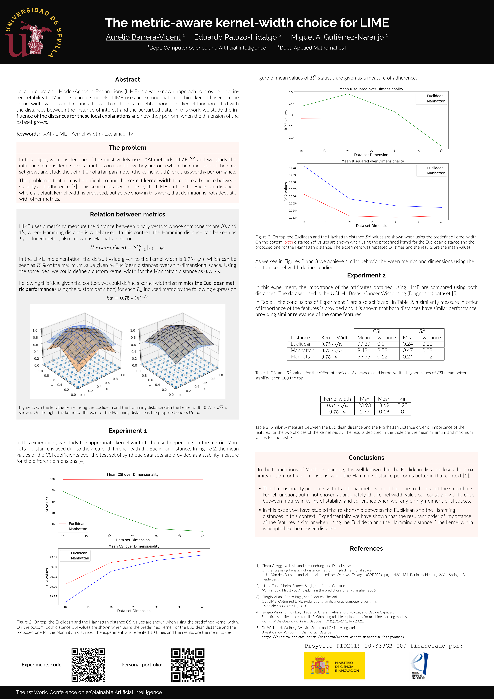

Inteligencia Artificial Explicable
Durante mi último año de carrera invertí gran parte de mi tiempo a la realización del Trabajo de fin de Grado. Este esfuerzo se vio recompensado con la posibilidad de participar en el First World Conference on eXplainable Artificial Intelligence, celebrado a finales de Julio de 2023 en Lisboa, gracias a las investigaciones que realicé en equipo junto con los departamentos de Matemática Aplicada y de Ciencias de la Computación e Inteligencia Artificial de la Universidad de Sevilla. Finalmente esta oporutnidad se concretó y pude presentar mi investigación en formato de poster durante la celebración del congreso.
Esta investigación se centro en LIME, un extendido método usado para arrojar luz sobre las decisiones que toma un modelo complejo, como puede ser una red neuronal, mediante la aproximación de la superficie generada por el modelo con un hiperplano que se ajusta localmente a dicha superficie.
En nuestro trabajo se estudia el efecto que tiene en este método el considerar distancias distintas a la Euclidea, llegando a la conclusión de que ajustando los parametros del método de forma adecuada (damos expresión implicita de la fórmula en el trabajo) se pueden llegar a obtener rendimientos "equivalentes" entre las distintas distancias. En el trabajo se ofrece también un análisis empírico para el caso de la popular distancia Manhattan.
Durante el proyecto aprendí las bases y los muchos conceptos que engloba la Inteligencia Artificial y que son necesarios para entender el funcionamiento de esta. Usé de forma intensiva Python junto con librerías como numpy y sklearn, y de forma más esporádica la librería keras para la creación de modelos de redes neuronales. La asistencia al congreso fue una experiencia genial ya que me dío la oportunidad de interaccionar con personas con el mismo interés por arrojar luz a los procedimientos que sigue esta emergente tecnología.
